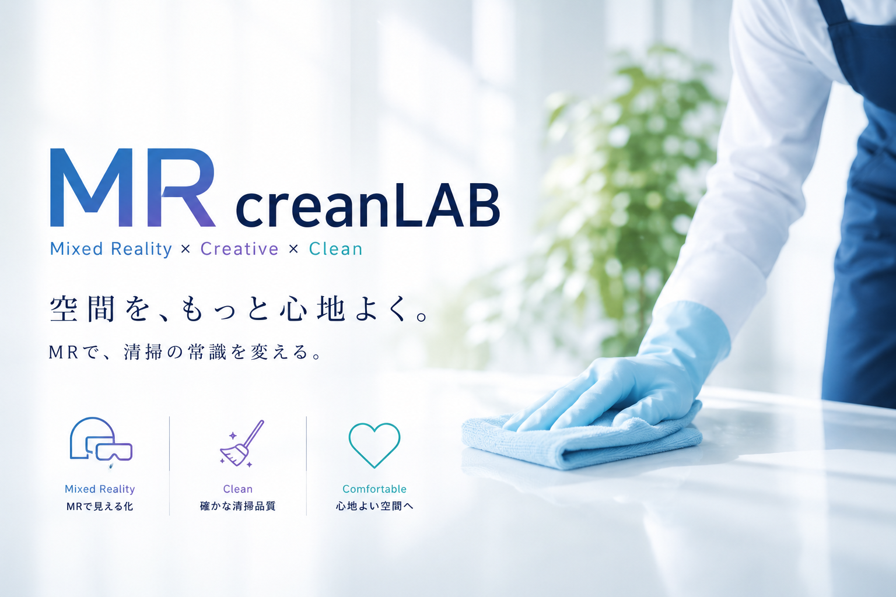
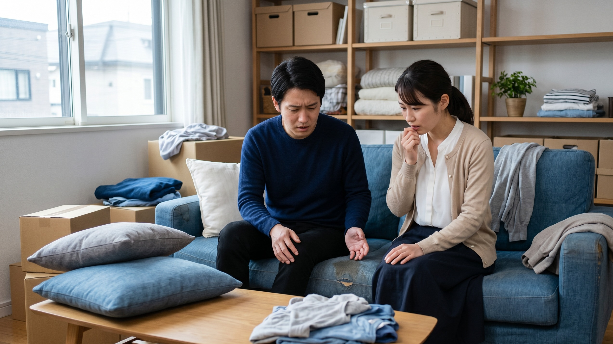
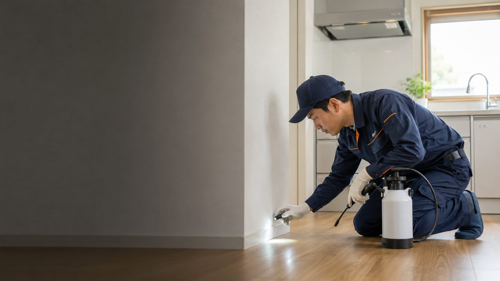
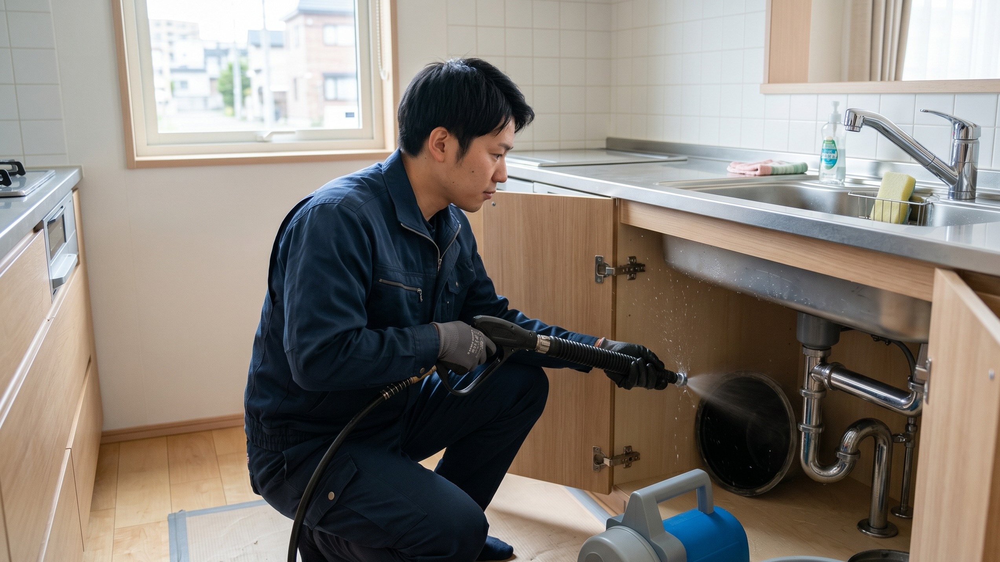
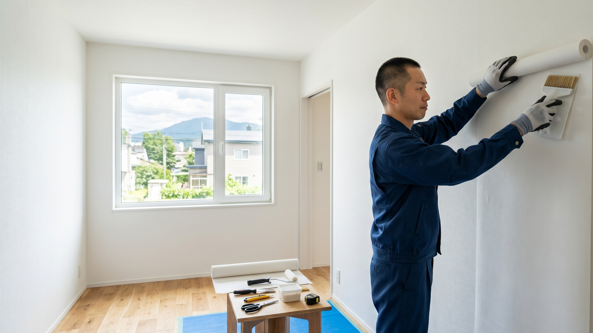

札幌の総合クリーンサービス｜害虫害獣 駆除・防除／排水管洗浄・グリーストラップ清掃／リフォーム・ハウスクリーニング

その悩み、MR.クリーンラボがまるごと解決します。
害虫害獣から水まわり、建物・住まいまで。窓口ひとつで、あらゆる衛生課題をワンストップで解決します。



そのほか 産業廃棄物・特別管理産業廃棄物の収集運搬／関連資材の販売 など、幅広く対応しています。
20年以上の経験と実績で培った技術と、お客様目線の安心対応。
ご相談・お見積り・現地調査はすべて無料。最短即日で、専任のプロが診断にお伺いします。
簡単4ステップ・最短即日対応。まずはお気軽にご連絡ください。
フォームまたはお電話でお気軽にご連絡ください。
現地を調査し、適正な安心価格でお見積りを提示します。
ご納得いただけましたら作業日時を調整します。
作業完了後、ご確認のうえご精算いただきます。
個人宅から法人まで、幅広くご利用いただいています。
つまりの相談に即日来てくれて助かりました。料金も明確で安心。
女性スタッフも来てくれて相談しやすく、部屋が見違えました。
駆除だけでなく侵入対策までしてくれて、その後トラブルなし。
グリーストラップの定期清掃を依頼。衛生管理が楽になりました。
※ お客様の声は内容確認用のサンプルです。実際の声に差し替え可能です。
札幌市内および近郊町村。道内5拠点で対応します。